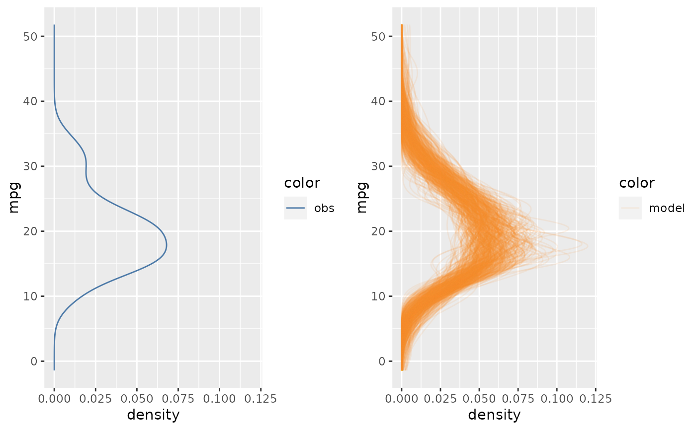
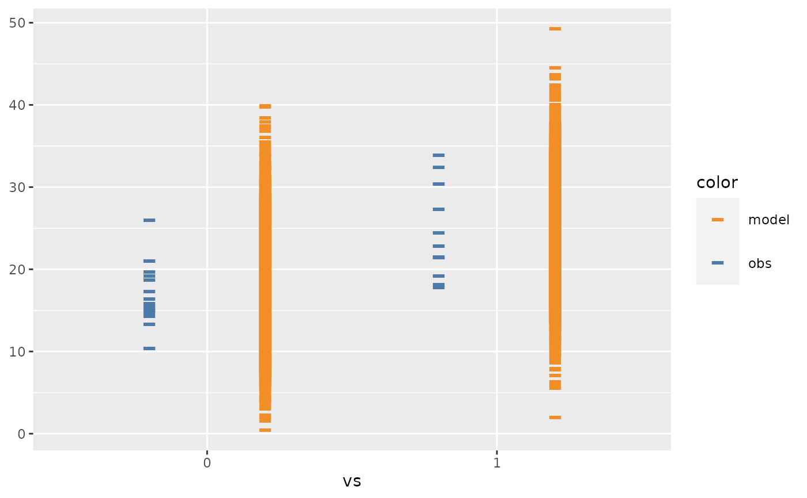
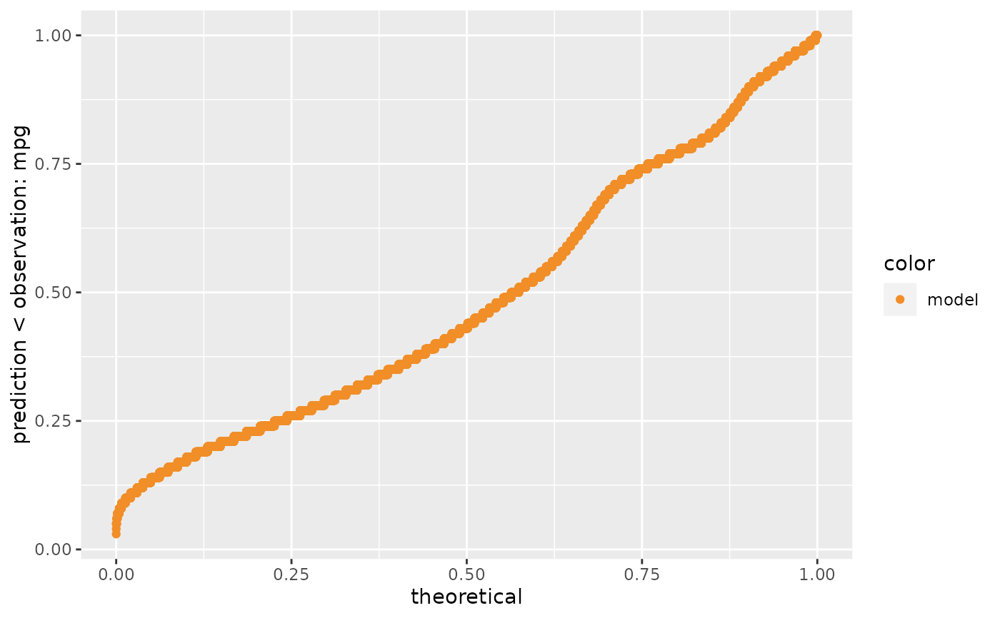
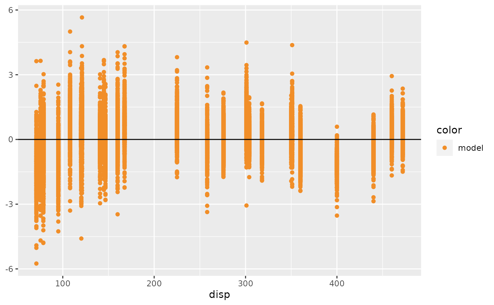
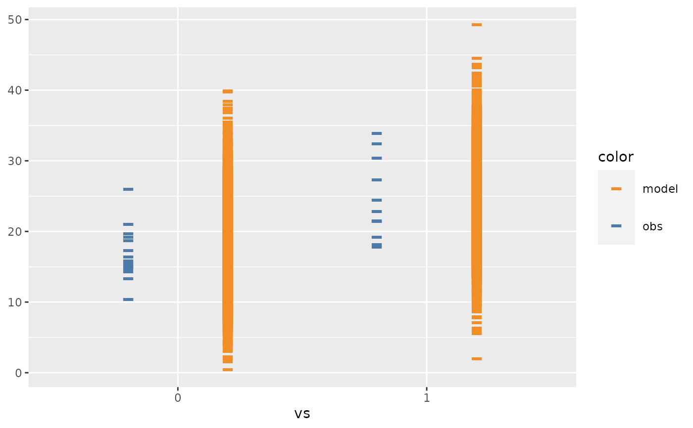
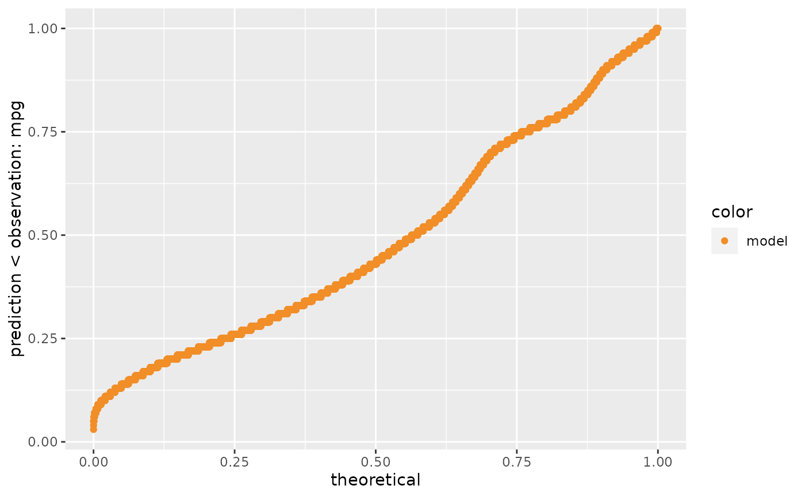
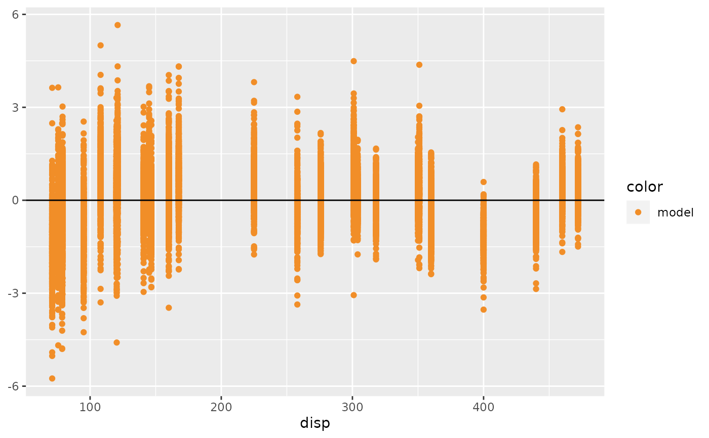

Define comparative layout in model check visualization
mc_layout_juxtaposition.RdWhich comparative layout to use? If using mc_layout_juxtaposition(), mcplot()
will use juxtaposition layout to puts data observations and model predictions side by side in two seperated plots;
if using mc_layout_superposition(), mcplot() overlays data observations and model predictions in one plot;
if using mc_layout_encoding, mcplot() will show comparison by explicit-encoding;
if using mc_layout_nested, mcplot() will show comparison side by side in one plot.
mc_layout_juxtaposition(...)
mc_layout_superposition()
mc_layout_nested(justification = 0.2)
mc_layout_encoding(transform)Arguments
- ...
Other arguments passed on to
cowplot::plot_grid(), when using juxtaposition.- justification
A number ro set the deviate from center when using nested juxtaposition. If
justificationis a positive number, model predictions will be on the right and data observations will be on the left; ifjustificationis a negative number, the positions are reversed.- transform
What operation needs for explicit-encoding? If
transformis:"residual", thenmcplot()will show the comparison between data observations and model predictions by a residual plot."qq", thenmcplot()will show the comparison by a Q-Q plot."worm", thenmcplot()will show the comparison by a detrended Q-Q plot (worm plot).A function, then
mcplot()will transform the data by that function. The input of the function is a data frame generated from thenewdatadata frame passed tomc_distribution(), which includes a .row column (a factor grouping rows from the input newdata), .chain column (the chain each draw came from, or NA if the model does not provide chain information), .iteration column (the iteration the draw came from, or NA if the model does not provide iteration information), and a .draw column (a unique index corresponding to each draw from the distribution). The output of the function should includes a column namedy_axisthat specifies the data shown on y axis at least and an optional column namedx_axisthat specifies the data shown on x axis. If the output includesx_axis,mcplot()will ignore the conditional variablexdefined inmc_condition_on(). See examples for more details.
Examples
library(ggplot2)
library(dplyr)
mcplot(mpg_model) +
mc_layout_juxtaposition()

mcplot(mpg_model) +
mc_layout_superposition()
 mcplot(mpg_model) +
mc_layout_nested() +
mc_condition_on(x = vars(vs))

mcplot(mpg_model) +
mc_layout_encoding("qq")

# Defining a explicit encoding by a customized transform function to check
# stdandard residuals of model and data.
std_res_func = function(data) {
data %>%
mutate(y_axis = prediction - observation) %>%
mutate(y_axis = y_axis / sd(y_axis))
}
mcplot(mpg_model) +
mc_layout_encoding(std_res_func) +
mc_condition_on(x = vars(disp)) +
mc_gglayer(geom_hline(yintercept = 0))

mcplot(mpg_model) +
mc_layout_nested() +
mc_condition_on(x = vars(vs))

mcplot(mpg_model) +
mc_layout_encoding("qq")

# Defining a explicit encoding by a customized transform function to check
# stdandard residuals of model and data.
std_res_func = function(data) {
data %>%
mutate(y_axis = prediction - observation) %>%
mutate(y_axis = y_axis / sd(y_axis))
}
mcplot(mpg_model) +
mc_layout_encoding(std_res_func) +
mc_condition_on(x = vars(disp)) +
mc_gglayer(geom_hline(yintercept = 0))
